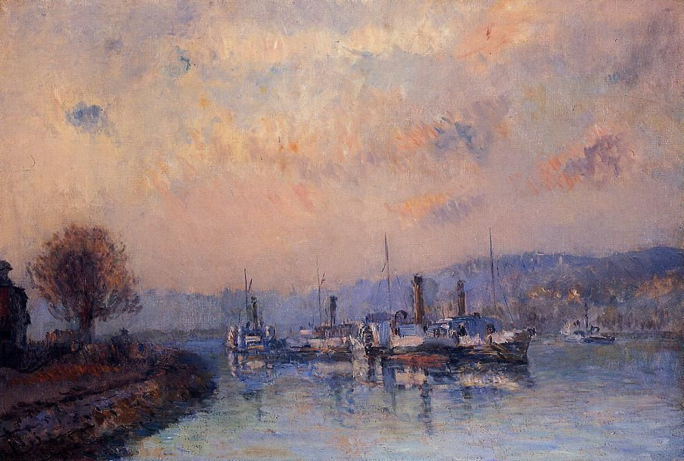
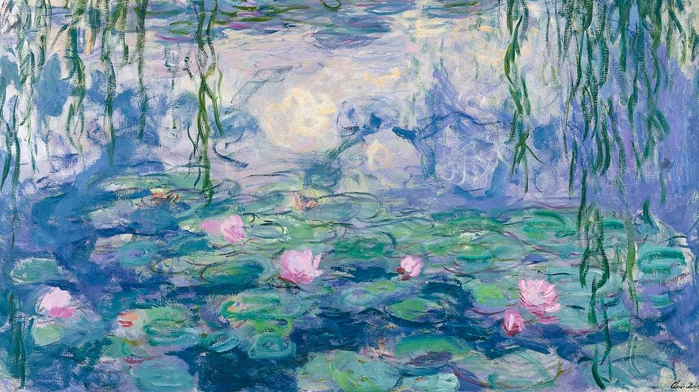
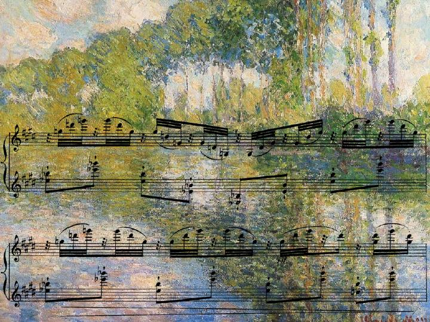
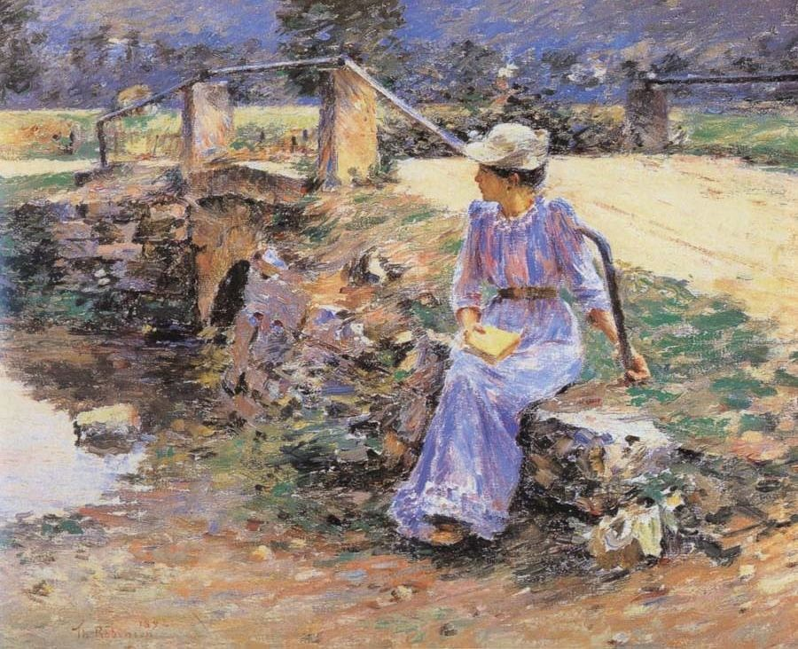

Импрессиони́зм — одно из крупнейших течений в искусстве последней трети XIX — начала XX века, зародившееся в живописи Франции, а затем распространившееся по всему миру и охватившее разные виды искусства. Представители импрессионизма стремились разрабатывать методы и приёмы, которые позволяли наиболее естественно и живо запечатлеть реальный мир в его подвижности и изменчивости, передать свои мимолётные впечатления.
Что такое импрессионизм
Импрессионизм в живописи
Живописцы отказались от использования палитры и создавали сами оттенки, нанося их мазками, преимущественно чистые цвета друг к другу. Черную краску старались не использовать, создавая темные участки с помощью визуализации эффекта. Поэтому на импрессионистские работы смотрят не с близкого расстояния. Однако новаторство было только частью изменений, которые смог принести импрессионизм в живопись.
Представители:
Клод Моне, Эдуард Мане, Пьер-Огюст Ренуар, Эдгар Дега, Жакоб-Абраам-Камиль Писсарро
Импрессионизм в музыке
Импрессионистские черты музыки французских композиторов проявляются в тяготении к поэтически одухотворённому пейзажу. Близость к природе, тонкие ощущения, возникающие при восприятии красоты моря, неба, леса, способны, по мысли Дебюсси, возбудить фантазию композитора, вызвать к жизни новые звуковые приёмы, свободные от академических условностей. Другая сфера музыкального импрессионизма — рафинированная фантастика, порождённая античной мифологией или средне-вековыми легендами, мир экзотики народов Востока.
Представители:
Мануэль де Фалья, Отторино Респиги, Кароль Шимановский, Бела Барток, Сирил Скотт
Импрессионизм в литературе
Импрессионизм в литературе — это направление, которое возникло в конце XIX — начале XX века и стало отражением аналогичных течений в живописи. Оно характеризуется сосредоточением на впечатлениях, субъективном восприятии действительности и использовании художественных средств для передачи мгновенных эмоций. Среди наиболее известных литераторов, работающих в этом направлении, можно выделить таких авторов, как Марсель Пруст, Вирджиния Вулф, и Т.С. Элиот. Их работы свидетельствуют о глубоком психологическом анализе и внимании к субъективному опыту, что и делает их произведения импрессионистскими.
Представители:
Томас Манн, Оскар Уайльд, Стефан Цвейг, Поль Верлен, Эмиль Золя
